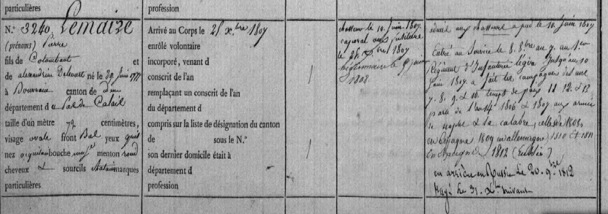
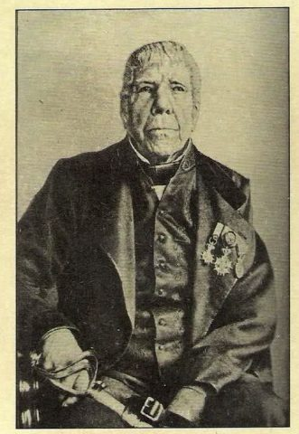
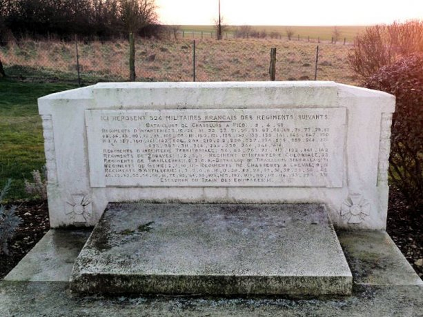
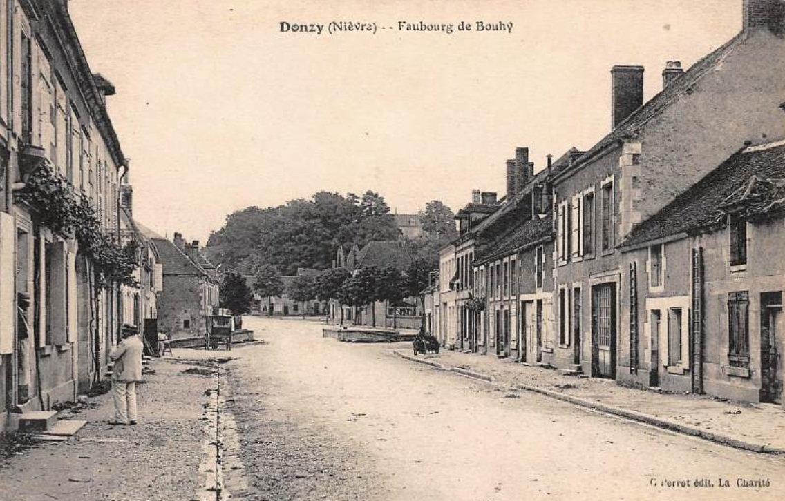
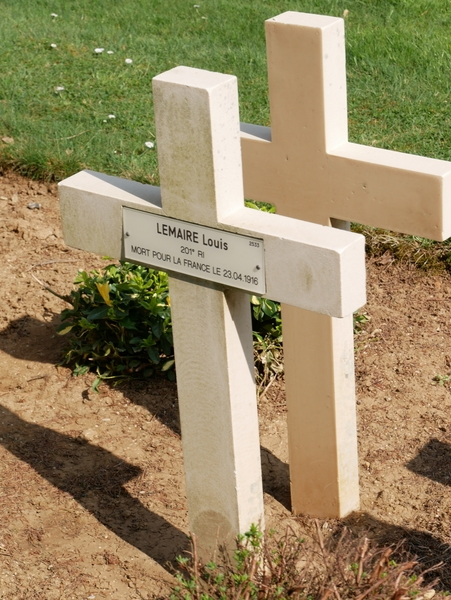
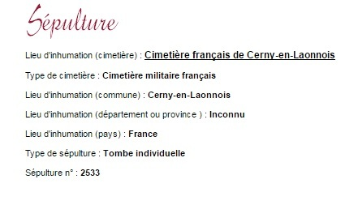
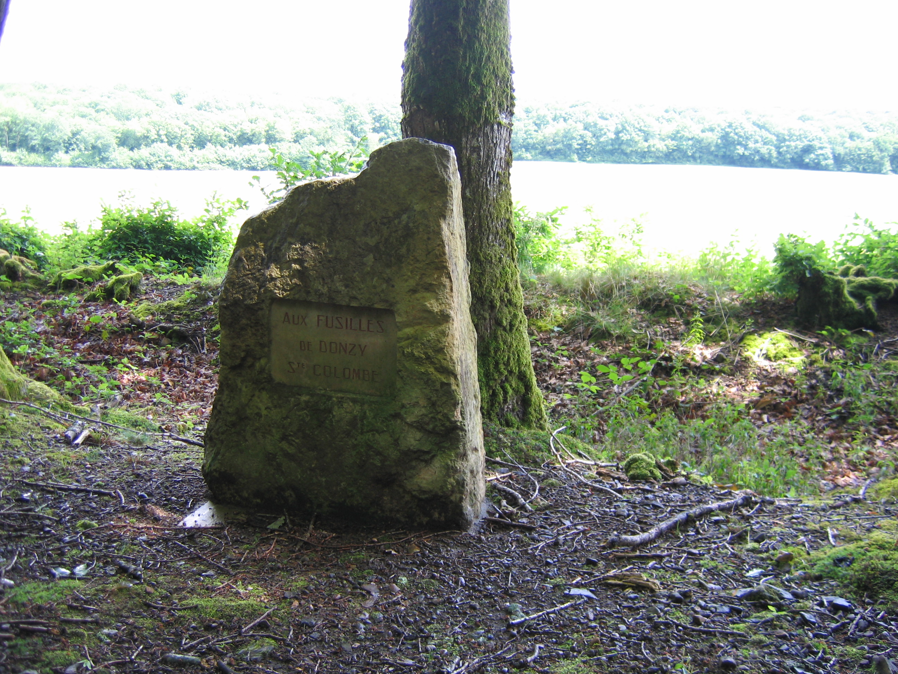
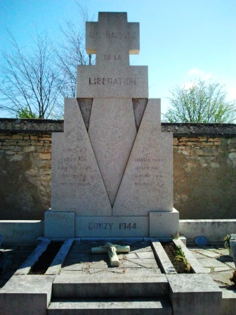
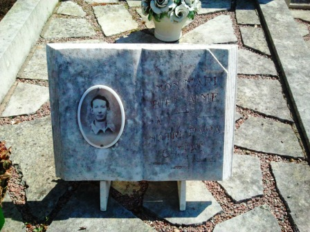
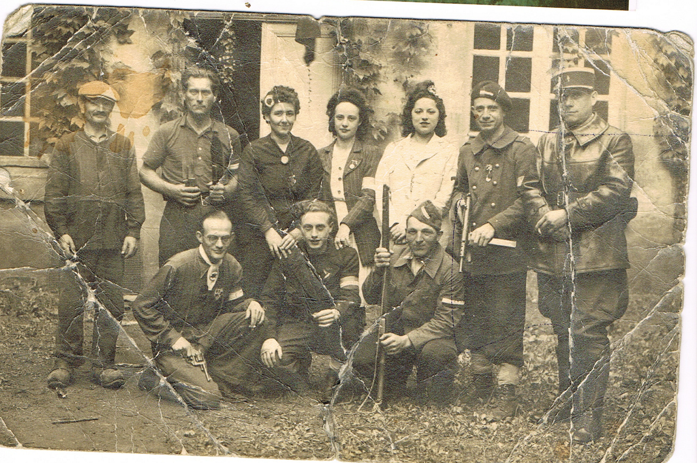

Pierre Lemaire fils de colombant LEMAIRE

Pierre Lemaire Matricule 3240 fils de Colombant LEMAIRE et de Alexandrine Delecourt, né le 29 juin 1777 à Douvrin Pas De Calais
Entrée au service le 8 octobre 1808 au 1er régiment d’infanterie légère jusqu’au 10 juin 1809
Chasseur fusilier le 10 juin 1809 dans l’Armée de Napoléon
Soldat caporal le 28/12/1809
Campagne de Calabre, Campagne d’Espagne 1808, Campagne d’Allemagne 1809, Campagne d’Espagne en 1810 et 1811, Campagne de Russie en 1812 en arrière en Russie le 20 septembre 1812 , rayé des effectifs le 31 décembre 1813.
Lien explicatif des Armées
Pierre Lemaire fils de Colombant LEMAIRE Ascendant direct à la 7ème génération de Dominique Lemaire.
Jean rock Coignet un cousin
Jean Rock Coignet

Ci dessous lettre d’un grognard Dominique Bouyque grognard lui aussi à titre informatif et de document d’époque j’ai retrouvé sa fiche.
1ere Guerre Mondiale 1914-1918

L’histoire de mes aïeux commence dans le Pas-de-Calais vers la région de Douvrin, Lorgies villes sérieusement touchées par la guerre de 1914-1918.
Douvrin fut détruit à 95%.
Les populations du Pas-de-Calais furent déplacées dans différentes zones libres pour sortir des zones de combats.deplaces-en-14-18
Mes aïeux déplacés sur la Nièvre 58 région Donzy.
Donzy Faubourg de Bouhy
Ma grand mère Fernande Dupré épouse Paul Lemaire
habitait dans cette rue.

.Mon arrière-grand-père Louis Joseph lui, est tombé en 1916, prés du chemin des Dames.

Samedi 26 AVRIL 2016, en fin de matinée, au monument aux Morts, dans le cadre des commémorations du centenaire de la guerre 1914-1918 et du projet labellisé Un parmi tant d’autres, un hommage a été rendu à la mémoire de Louis Lemaire. Ce soldat est mort pour la France le 23 avril 1916, à 31 ans, à Paissy (Aisne), au cours des combats de la bataille de Verdun.

« Cent ans plus tard, nous rendons hommage à tous les Poilus de Donzy, de la Nièvre et de la France, morts pour la démocratie », a déclaré Nicolas Regny, le sous-préfet (*).
Belle initiative que
de saluer ces soldats
« C’est une belle initiative à Donzy par les membres de l’Office de tourisme, soutenue par la municipalité et le Souvenir Français, que de saluer l’anniversaire du décès de soldats originaires de Donzy ou d’ailleurs, tombés au champ d’honneur. » « Nous sommes rassemblés pour rendre hommage et redonner un visage, une identité aux Poilus de Donzy », a indiqué Jean-Louis Chantreau, responsable du projet.
Originaire de Douvrin (Pas-de-Calais), Louis Lemaire a épousé Marie-Augustine Lemaître. En septembre 1914, fuyant l’avancée de l’armée allemande, son épouse s’était installée à Donzy avec ses enfants. Inhumé au cimetière militaire de Paissy, ses restes ont été transférés à la nécropole nationale de Cerny-en-Laonnois, auprès de 5.150 camarades de combat.
(*) Accompagné des anciens combattants Fnaca, des gendarmes, du sous-préfet, de la sénatrice Anne Émery-Dumas, Thierry Flandin, conseiller départemental et président de la communauté de communes, Jean-Paul Jacob, maire et membres du conseil. Des gerbes de fleurs ont été déposées par Christian Debroux, délégué du Souvenir Français, entouré de Louis Guimard et Alyson Cornille et par le sous-préfet, en présence de la Lyre donziaise.
iNFO DONZY. Hommage à un Poilu mort à 31 ans – Le Journal du Centre
LOUIS JOSEPH LEMAIRE http://www.memoiredeshommes.sga.defense.gouv.fr/fr/ark:/40699/m005239f350c9707
147 ème Régiment d’infanterie le 06 octobre 1906
En congé le 25 septembre 1908
73 ème Regiment infanterie du 30 aout au 21 septembre 1911
201 ème Régiment d’infanterie
Campagne contre l’Allemagne du 11 aout 1914 au 23 avril 1916
Voir livret matricule
creusois de la 6eme 201 d'infanterie 1914-web
Il faisait parti du 201 ème Régiment d’infanterie 19ème compagnie (Cambrai) comme la photographie qui représente le 6 ème Creusois du 201ème Régiment d’Infanterie.
Il repose en paix dans le cimetière militaire prés de Paissy voir lien ici et personnes inhumés.
Son frère Leopold Lemaire décède aussi de la fièvre typhoide le 2 janvier 1915
Leopold Joseph Lemaire
Leopold Joseph Lemaire -19-10-1879–>02-01-1915
Le 6e Régiment Territorial d’Infanterie (6e RTI) a été actif principalement sur le front belge en 1915, notamment dans le secteur de Nieuport, où il a participé à la stabilisation du front après les offensives allemandes.
Le typhoïde a eu un impact sévère sur les troupes du 6e Régiment Territorial d’Infanterie (6e RTI) en 1915, notamment dans le secteur de Coxyde et de Zuydcoote, où une épidémie s’est déclarée en raison de conditions sanitaires précaires.
Principaux impacts du typhoïde
Pertes humaines importantes. Le typhoïde a causé de nombreuses hospitalisations et décès parmi les soldats.À l’échelle de l’armée française, 15 000 soldats sont morts du typhoïde entre 1914 et 1918, avec un pic en 1915 (64 500 cas cette année-là).Le taux de mortalité atteignait 12 à 14 %, soit environ 1 décès pour 8 malades.
Conditions favorisant l’épidémie. Le terrain marécageux du front belge, proche de l’Yser, favorisait la contamination de l’eau par les eaux usées.Les puits étaient mal protégés, et l’eau potable souvent impropre à la consommation.La promiscuité dans les tranchées et l’absence d’hygiène adéquate ont accéléré la propagation.
Réponse sanitaire. Les malades étaient évacués vers des hôpitaux spécialisés, comme celui de Zuydcoote, dédié aux contagieux. Une campagne de vaccination a été lancée à partir de fin 1914, mais elle n’a pas pu couvrir immédiatement tous les réservistes. Des mesures d’isolement, de désinfection et de déclaration obligatoire des cas ont été mises en œuvre, notamment par les autorités sanitaires belges.
Conséquences opérationnelles.L’épidémie a affaibli temporairement les effectifs du régiment.Le maintien du front a nécessité des rotations et des renforts pour compenser les pertes sanitaires.
Mon grand père PAUL n’a pas connu son père Louis Joseph il avait 1 an.
Monument aux Morts Donzy 1914-1918
donzy-monument-aux-morts
Photographie Alexandre Lucien Nozet
95 ème Régiment d’infanterie le 19 décembre 1914
20 ème Régiment d’infanterie le 12 mars 1915
59 Régiment d’infanterie le 6 décembre 1915
Une photo du 59 ème
Blessé le 23 mars 1915 à Perhes les Hurlus (balle joue droite)
Blessé le 26 avril 1916 par éclat d’obus (hanches,bras, pieds)
Décédé le 28 avril 1916 suite de blessure ambulance 9/17 Brocourt (Meuse)
Voir la fiche de campagne
Mort pour la France pour un aïeu Alexandre- Lucien Nozet (Frère de Lucie Nozet) 18/07/1916
Autres personnes de la ville de DONZY beaucoup de cousins font partis de cette liste 109 soldats ont été tués dans la commune en 14-18
1914 – 1918 : Sague Laurent – Boileau Léon – Sarrazin Henri – Maisonneuve Louis ». Les noms de ces personnes n’apparaissent pas sur le monument principal.
Morts de Donzy : ADRIEN Eugène Victor – ADRIEN Georges Alexandre – ALGRET Paul Lucien – AUBEL Charles – BAILLY Marcel – BAIN Eugène – BELLIER Théodore – BELLOT Louis René – BELLOT Marcel Auguste – BERNARD Arthur Émile – BILLARD Alexandre – BILLEBAULT Jean François Joseph Albert – BLIN Léandre – BOISSON Frédéric – BONGATHE Henri Lucien – BORDERIEUX Gustave – BORDERIEUX Victor – BORDET Célestin – BOULIN Jean Louis – BOURCIER Pierre François René – BRETAGNE Georges André – BREUZARD Léon – CARON Charles – CHARLON Charles Louis Placide – CHEVEAU Laurent Maurice – COIGNET Louis Ernest – COQUILLAT Pierre – COUARD Didier – COUARD Louis – COULONGES Auguste – DAPOIGNY Pierre Alexandre – DELOUCHE Jean Louis – DENAUX Émile – DESPATIS Alexandre – DESPATIS Émile Hippolyte – DOUDEAU Louis – DUPRÉ Jules Henri – FÈVRE Clément – FICHOT Paulin – FRONT Frédéric Hubert – GALLARD Georges Jules Léon André – GALLERET Albert – GARIN Charles – GARNAULT Fernand – GARNAULT Louis Célestin – GARNIER Charles Martin – GAUDRY Pierre Théophile – GENTILHOMME Achille – GEORGES André François – GIRAULT Étienne – GIRAULT François Jean Pierre – GOUSSE Léon Edmé – GROSJANT Jules – GUITTON Jules Auguste – HENRY Clément – HUICQ Alphonse – JACONNET Constant Théophile – JARREAU Gaston – JOHANET Gustave Xavier – LANGLOIS Jean Pierre – LEMAIRE Louis Joseph – LEMIÈRE Louis François – LESOEUR Louis – LURIER Louis Alban – LUTINIER Louis Auguste – MARCEAUX Jean – MAURICE Marcel – MAUROY Eugène – MAUROY Paulin – MERLIN Charles – MERLIN Lucien – MEUNIER Eugène – MHUN Ernest – MICHOT Louis – MONMIGNOT Émile – MORISQUE Annet Marie Barthélémy Augustin – MOUILLE Théodule – NAMY Louis Alexandre Narcisse – NIEZ Auguste – NOZET Alexandre Lucien – OZANNE André Victor – PALET Émile Hippolyte – PAUDOS Albert Auguste – PAURON Auguste – PAURON Henri Lucien – PLOCQUE Henri Eugène – PUPILLE Eugène – RAT Lucien – REES LEWIS – REES LEWIS Jean – RÉNIER Victor Paul – ROLLAND Auguste – ROSÉ Louis Jean Baptiste – ROUMIER Constant – RUCHETON René – SELLIER Eugène – SENÉ Vérain Lucien – SERON Alexandre – SERON SAUJOT Ernest – SEURRE Edmond Victor – SEURRE Georges Louis Joseph – THOMAS Georges – TOULON Louis – VAVON Alexandre Pierre – VENEAU Louis Célestin – VOGT René .
Une photographie de Cyrille Gaston Marius arrière grand père de mes filles coté maternel.
1939 – 1945 : BARDIN Louis – SAUJOT Lucien – MORLAT Maurice – MICHOT Jacques – MARCEL Louis – LEMAIRE Paul – BLIN Lucien – CADEAU Robert Louis – CHEVEAU Laurent Maurice – COUARD Louis – JARREAU Clémentine – LEMAIRE Paul – LEMAITRE Pierre – LETEUR Fernand – LURIER Albert – MAILLARD Lucien – MARCEL Louis – THOUVENOT Jean. Victime civile LEBÈGUE Eugène Édouard 1939-1945.
Extrait du Maquis Roland 1944 ou mon grand père ainsi qu’un cousin fut pris en otage en représailles.

Stèle sur le lieux ou furent retrouver les corps à Sainte Colombe des Bois Stèle dans le bois de Sainte Colombes des Donziais exécutés ci-dessous
Treize personnes de Donzy et de Sainte-Colombes furent, hélas, torturées et fusillées en représailles. Ce sont : pour Donzy : Louis Couard, 36 ans, père de huit enfants ; Paul Lemaire, 29 ans ; Pierre Lemaître, 26 ans ; Lucien Maillard, 24 ans et Jacques Michot, 17 ans, assassinés dans la Forêt d’Avains ou (Asvins), commune de Châteauneuf-Val-de-Bargis ; Marcel Louis, 21 ans, et Georges Morère, 26 ans ; pour Sainte-Colombe: Eugène Bardin, 44 ans et sa femme, 41 ans, décédée à l’hôpital de Cosne — leur ferme de la Galonnerie fut brûlée comme le hameau de Couthion ; Maurice Coillac, 22 ans ; Marcel et René Poursin, 36 et 26 ans, et Eugène Lebègue, 39 ans, rattrapés dans leur fuite.
Paul Lemaire fusillés par les Allemand 1 juillet 1944 et son demi frère Pierre Lemaitre
Monument aux Morts Donzy 1944
Paul Lemaire 1944 Monument aux Morts Donzy


Mon grand père et si dessous l’acte de naissance de Pierre Lemaitre son demi Frère.
Né le 19 novembre 1918 à Donzy (Nièvre), exécuté sommairement le 1er juillet 1944 à Châteauneuf-Val-de-Bargis (Nièvre) ; résistant des FTP.
Pierre Lemaître était le fils de Marie Augustine Lemaître et de père non connu. Il était marié avec Léda Paccagnini et domicilié à Donzy.
Il entra dans la Résistance au maquis FTP Roland dans la Nièvre. Le maquis, commandé par le Commandant Roland Champenier, fils de Louis Champenier s’était installé à Sainte-Colombe-des-Bois, près de Donzy (Nièvre). Le 1er juillet 1944 à cinq heures du matin, des forces allemands importantes et lourdement armées investirent la région. Une bataille sanglante eut lieu entre les deux adversaires. Douze maquisards furent tués au combat mais l’ennemi eut 174 tués selon ses propres chiffres. Les occupants se vengèrent en assassinant quatorze personnes, civils ou résistants.
Pierre Lemaître qui avait été arrêté fut interrogé, torturé et fusillé en représailles dans la forêt d’Avains, commune de Châteauneuf-Val-de-Bargis, avec quatre autres maquisards : Louis Couard, 36 ans, Paul Lemaire, 29 ans, Lucien Maillard, 24 ans et Jacques Michot, 17 ans, le 1er juillet 1944 à quinze heures.
L’acte de décès fut dressé le 2 juillet sur la déclaration de son épouse, âgée de 22 ans, sans profession.
Il n’a pas de dossier SHD et n’est pas identifié sur MdH.
Son nom est inscrit sur le monument aux morts et le monument commémoratif aux Martyrs de la Libération, à Donzy (Nièvre).
Marié le 29 juin 1944 à Donzy avec Leda sans profession.
https://www.geneanet.org/registres/view/2067676/38?
individu_filter=54355494
Peut être une image de texte
Sa femme Léda Paccagnini matricule247556 née le 30/10/21 est dcd le 11/09/2008 à Cosne sur Loire acte 216
Résistance FFI dernière ligne
Ma Grand mère Fernande Libération Août 1944 3ème en haut à droite(robe noire medaillon) avec cocarde dans les cheveux.

Libération Aout 1944 ma grandmère Fernande Lemaire 3 ème en haut à gauche 1944 avec la cocarde
Arthur Robe
http://www.francaislibres.net/liste/gr16p.php?&nom=robe&pre=arthur Arthur résistant en relation avec Jean Moulin
Arrière grand père du coté de ma femme coté maternelle